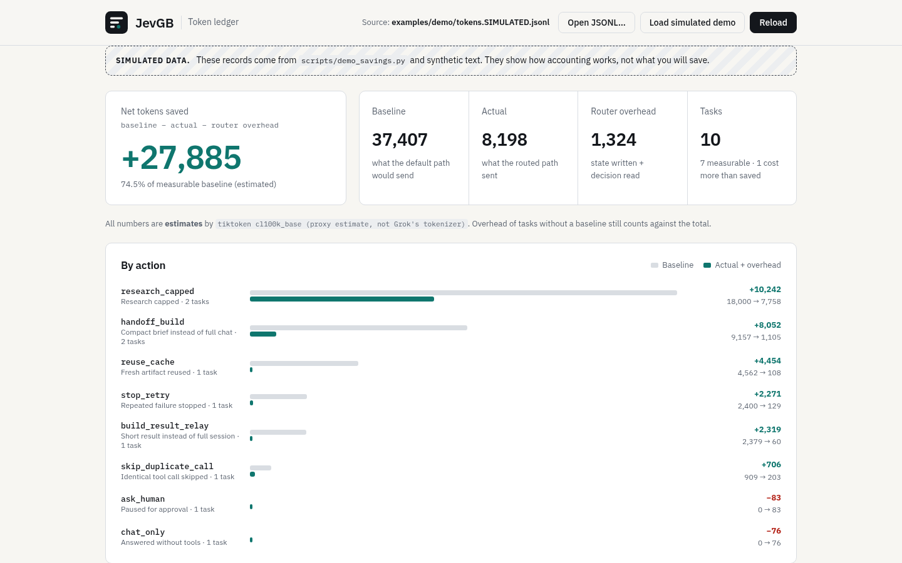

Open source · Works offline · No API key needed
Spend tokens on the work, not on re-reading the chat.
JevGB sits in front of Grok Bot. It hands code work to Grok Build as a compact brief, reuses fresh results, stops repeated failures, and keeps a ledger of what each decision actually cost.
pip install -e . && jevgb route '{"goal":"Fix the failing test"}'

How it works
A small Python router that Grok Bot calls before heavy work. It runs on a free offline rules classifier, or on TypeSafe Jev if you have an API key.
Decide what the task needs
The goal is classified as chat, lookup, research, browser, code or an account action. Irreversible actions always pause for your approval.
Send a brief, not the history
Code work goes to Grok Build as a structured brief: goal, files, constraints, acceptance criteria, do-not-touch list. Grok Build reports back in a short, checkable block.
Log what it cost
Each decision writes baseline, actual and router overhead to a local JSONL ledger. jevgb report and the dashboard summarize it.
Measured, not promised
We don't claim a percentage. Savings depend on your chats and tasks, so the ledger counts them for you, and it shows the cases where routing cost more than it saved.
net saved = baseline − actual − router overhead
- baseline
- What the default path would send: the full chat forwarded to Grok Build, or the cost of redoing cached work.
- actual
- What the routed path sent: the brief, the cached artifact, the short relay.
- overhead
- What Grok Bot spends calling the router. It's subtracted every time, even when nothing was saved.
- Estimates, clearly labeled. Tokens are counted with tiktoken as a proxy, or chars/4 as a fallback. Grok's own tokenizer is not used.
- Every number has a basis. Each record says whether its baseline was measured from text, estimated or reported by the caller.
- Guards keep the odds in your favor. Context budget caps, an artifact cache with TTL, duplicate tool-call detection, a stop after repeated identical failures, and a summary before every handoff.
Open source, MIT licensed
The router, ledger, dashboard and skills are free to use, change and self-host. Built on Bodila51/grok-bot-jev (MIT), with attribution kept.
Support the project
If JevGB saves you time or tokens, sponsorship pays for maintenance, new skills and honest benchmarks.
Become a sponsor